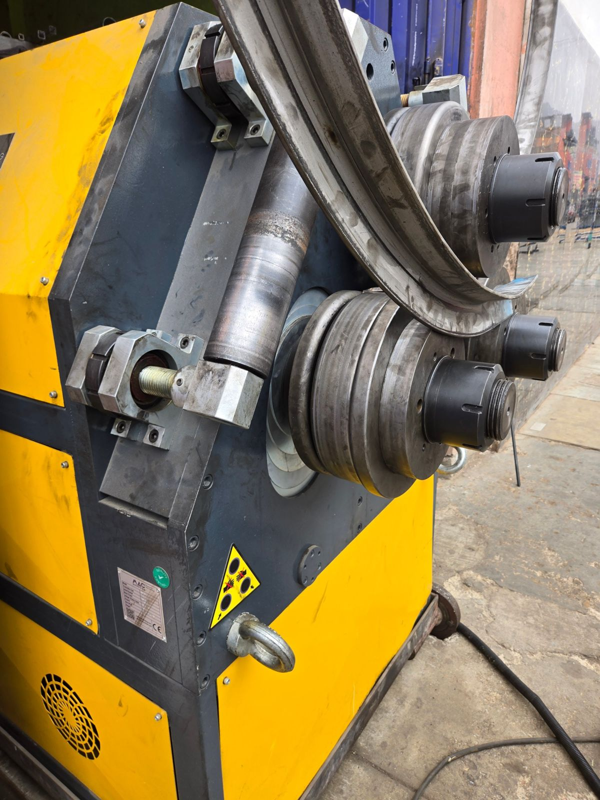
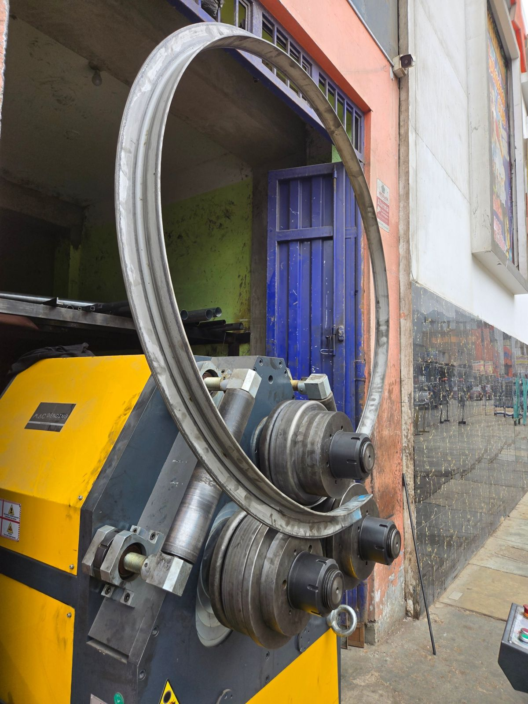
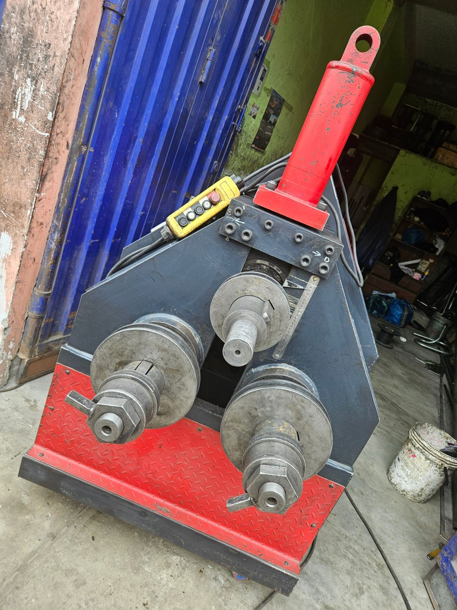

Lo que hacemos
Nuestros servicios
Trabajo a medida para obras, techos y estructuras.
Tecnología
Maquinaria de alta precisión
Contamos con máquinas de alta precisión para rolar y doblar tubos y perfiles con medidas exactas y acabado limpio.





Experiencia
Nuestros videos
Nosotros
CEFRO Doblez y Rolado
Somos una empresa industrial de metalmecánica de precisión ubicada en Independencia, Lima. Ofrecemos rolado y doblez de tubos para techos parabólicos, en acero, galvanizado, ángulo, platina, aluminio y tubo rectangular, además de soldadura para todo tipo de estructuras metálicas.
ContáctenosDoblez hasta 3 pulgadasTubos con medidas y ángulos a pedido.
Rolado para techos parabólicosEn varios materiales y perfiles.
Soldadura de estructurasPara todo tipo de estructuras metálicas.
Al día
Publicaciones y novedades
Mira nuestros últimos trabajos en redes sociales.
Escríbenos
Contáctenos
Envíanos tus medidas y te respondemos con tu cotización.
- DirecciónTaladros 200, Independencia, Lima, Perú
- Teléfono992 550 533
- WhatsApp+51 992 550 533
- CorreoCEFRODOBLEZYROLADO@GMAIL.COM
- RedesFacebook · Instagram